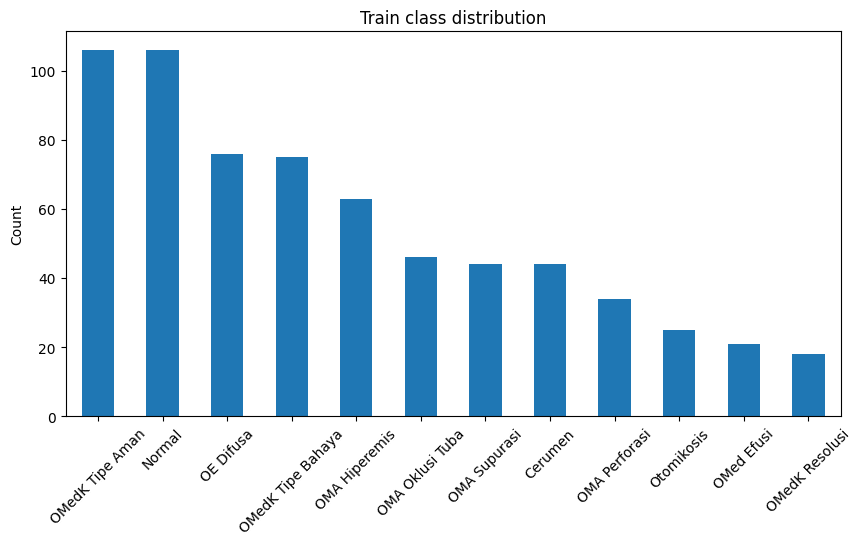
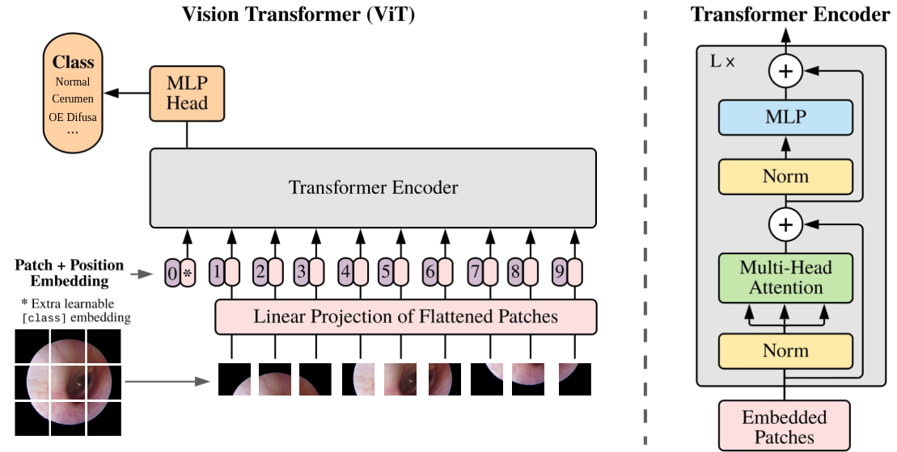
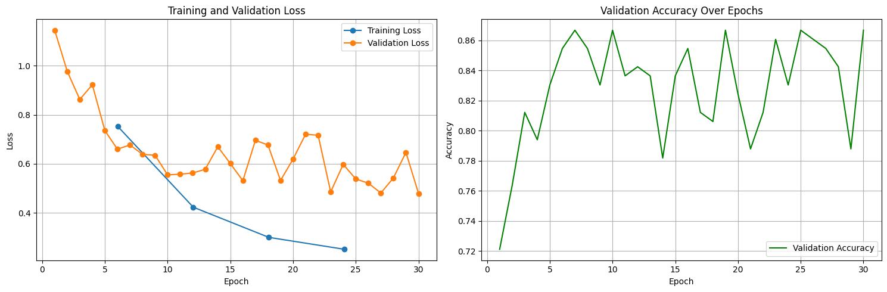
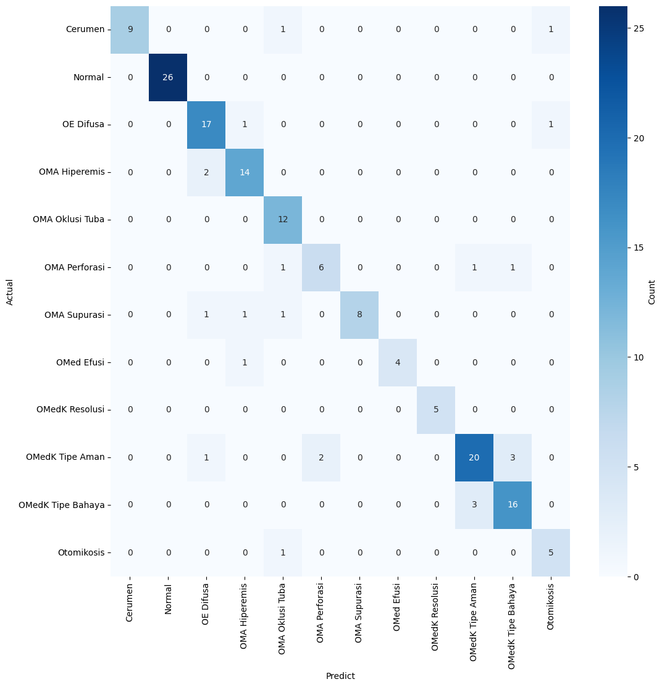
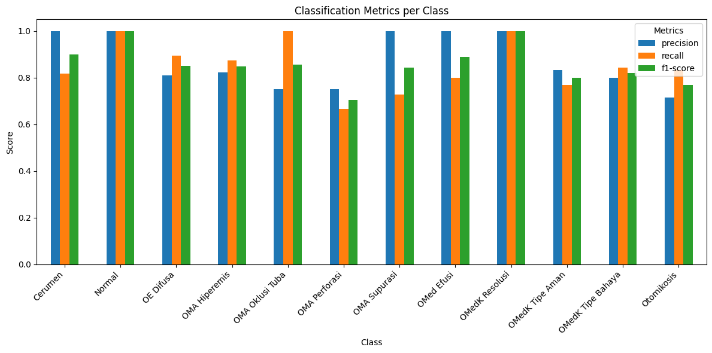
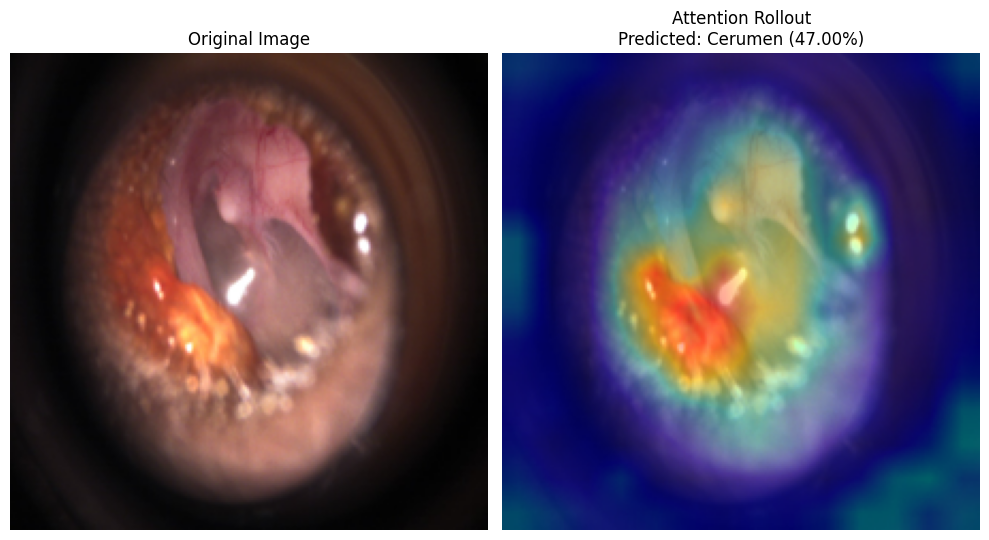
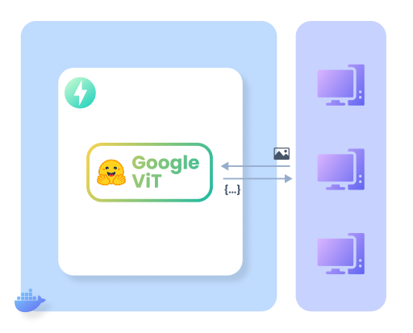

Overview
This project implements an automated classification system for ENT (Ear, Nose, Throat) diseases using deep learning. The current focus is on ear disease classification with 12 different conditions including Normal, Cerumen, OMA (Otitis Media Akut) variants, OMed (Otitis Media) types, Otomikosis, and OE Difusa.
Performance Metrics
| Test Accuracy | ~86.1% |
| Macro F1-Score | ~87.3% |
| Weighted F1-Score | ~86.9% |
Improvements Over Previous Model
| Model |
Accuracy |
Parameters |
| DenseNet169 (previous) | ~76% | 14.15M |
| ViT-base (current) | ~86% | 86.4M |
Dataset
The dataset consists of 823 ear endoscopy images organized into 12 categories covering conditions from normal ear to various types of Otitis Media and fungal infections. The data is split 80% training and 20% testing with stratified distribution to maintain class balance.

Disease Categories
- Cerumen: Earwax buildup
- Normal: Healthy ear
- OE Difusa: Diffuse Otitis Externa
- OMA Variants: Acute Otitis Media (Hyperemic, Tubal Occlusion, Perforation, Suppuration)
- OMed Efusi: Otitis Media with Effusion
- OMedK Types: Chronic Otitis Media (Resolution, Safe Type, Dangerous Type)
- Otomikosis: Fungal ear infection
Model Architecture

- Vision Transformer (ViT): google/vit-base-patch16-224-in21k
- Transfer Learning: Pre-trained on ImageNet-21k, fine-tuned on ear disease dataset
- Input Size: 224×224 RGB images
- Output: 12 disease classes with confidence scores
Training Configuration
- Learning Rate: 2e-5
- Batch Size: 8 (per device)
- Epochs: 30
- Optimizer: Adam with weight decay (0.01)
- Strategy: Load best model based on accuracy
Data Augmentation
- Random resized crop (224×224)
- Random horizontal flip
- Normalization (mean=[0.5, 0.5, 0.5], std=[0.5, 0.5, 0.5])
Evaluation Results
The model shows strong performance across most classes with minimal overfitting due to effective data augmentation. Training and validation loss converge smoothly, with validation accuracy plateauing around epoch 15-20.
Training History

Confusion Matrix

Classification Report

Per-Class Performance
- Best performing: Normal, Cerumen, OMedResolusi (>90% F1)
- Moderate performance: OMA variants (80-90% F1)
- Challenging: OMedK subtypes requiring expert-level distinction
Attention Rollout Visualization
Attention Rollout visualizes where the Vision Transformer focuses when making predictions. Unlike Grad-CAM (designed for CNNs), it uses the transformer's native attention weights across all layers to show which image regions contribute most to classification decisions, highlighting the model's ability to focus on clinically relevant areas.

Production Deployment
The trained model is deployed as a RESTful API using Docker, FastAPI, and Uvicorn for real-time inference.

Performance
- Inference time (CPU): ~200-300ms per image (11th Gen Intel® Core™ i5-11400H × 12)
- Memory usage: ~1.2GB (model loaded in memory)
Technologies
Limitations & Challenges
- Dataset Size: Limited training samples for some rare disease categories
- Image Quality: Variability in lighting conditions, artifacts, and motion blur
- Expert-Level Distinctions: Some disease subtypes require years of clinical experience to distinguish accurately
Future Work
- Experiment with smaller ViT variants (ViT-small, ViT-tiny)
- Knowledge distillation to compress model
- Quantization for edge deployment
- Implement uncertainty-based active learning
- Enhanced explainability for clinical decision support